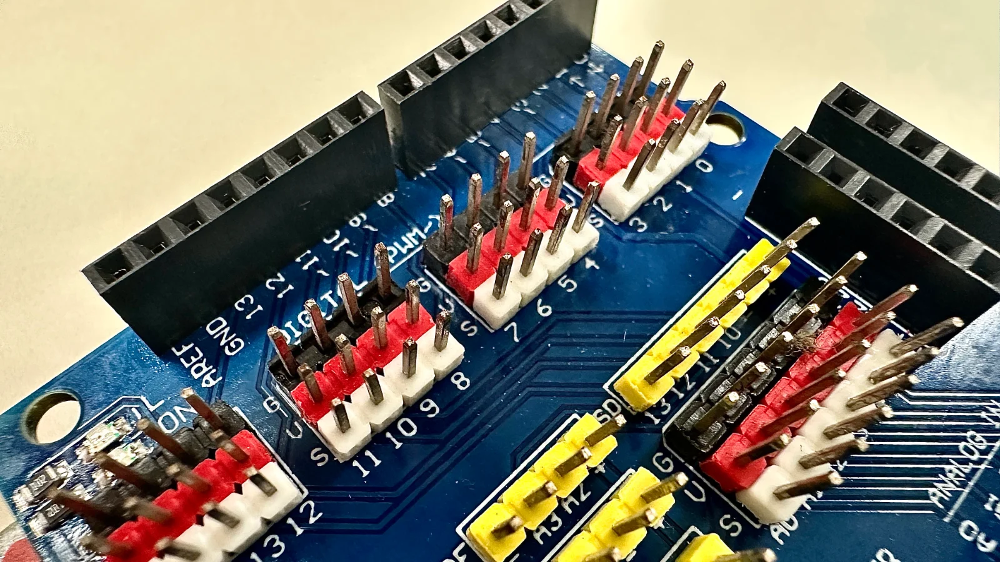

1為什麼每個零件都是三條線
這學期你會接十幾種不同的零件——按鈕、旋鈕、蜂鳴器、馬達⋯⋯長得完全不一樣，但接線的邏輯都一樣：三條線，各自負責一件事。
板子上就是照這個順序印的：G 在上、V 在中、S 在下
💡 GVS 是什麼
- V（電源）：給零件「電」，讓它有力氣工作。模組上印的是
VCC。 - G（接地）：電要能「流回去」才會一直有電流通過，這條線就是回程的路。模組上印的是
GND。 - S（訊號）：零件跟板子之間「說話」用的線——零件把偵測到的東西告訴板子，或板子叫零件做什麼動作，都靠這條。模組上印的是
SIG。
想成水管：V 是水從哪裡進來，G 是水流去哪裡（沒有出口，水就不會流動），S 則是中間閥門開多大這個「訊息」。電路也一樣，沒有接地，電流出不去，零件就不會工作。
2擴展板上的插槽長什麼樣
看你的擴展板，會看到一整排一整排的插槽，每一排都印著 V、G、S 三個字母。模組的接頭要對齊字母插上去——V 對 V、G 對 G、S 對 S，不能插歪一格。

模組那一端也是三支針，但上面印的不是 G、V、S，而是 GND、VCC、SIG——換個寫法而已，意思完全一樣：
三條線已經固定在同一個接頭裡，你要做的是把接頭整個對準擴展板的三排插上去，讓 GND 對到 G、VCC 對到 V、SIG 對到 S。
3練習：把接頭整組插對
模組的三條線固定在同一個接頭裡，順序換不掉；擴展板上的一排也是固定的 G、V、S。所以真正要判斷的不是「紅線該放哪一格」，而是整組要插在第幾腳、方向有沒有轉反、有沒有插歪一格。
⚠️ 線的顏色靠不住——上面畫的是最常見的配色，但我們教室這套線是灰／紅／橘，別班的可能又不一樣。真正準的方法只有一個：看模組上印的 GND／VCC／SIG，對到板子上的 G／V／S。
剛剛如果你插歪一格，畫面會跳出紅色警告——那個狀況就是短路：電源（V）直接接到接地（G），中間沒有經過任何零件。電流會突然暴衝。用 USB 供電的時候，板子和電腦通常會自己切斷電源保護，看起來像是「板子突然沒電」——但接點會發燙，而且換成外接電源供電時，就真的可能燒壞零件。
⚠️ 最容易短路的三個狀況
- 整組插歪一格——最常見的一種，模組的 V 剛好落到板子的 G 那一排，兩個直接碰在一起。
- 兩條杜邦線的金屬頭互相碰到——尤其是還沒插進插槽、線就放在桌上通電的時候。
- 接頭轉 180° 插反——雖然 V 還是對到 V 不會短路，但訊號線接到接地，零件不會動，訊號腳也可能被燒掉。
下一課開始正式接線之前，養成習慣：先把所有線接好、檢查過一次，才插 USB 通電——這個順序能避開大部分短路的機會。
如果不小心把 V 和 G 用一條線直接接在一起（沒有經過任何模組），會發生什麼事？
想想電流會不會被「擋住」。
4換你在板子上做
- 先拔掉 USB 線，確定板子沒有通電
- 拿一個模組（老師會給），找到它針腳旁邊印的
GND、VCC、SIG - 用杜邦線把模組接到擴展板任何一排插槽，記得對齊字母
- 接好之後舉手給老師檢查一次，確認沒有插歪，再插 USB
5卡住了？先看這裡
⚠️ 今天最常見的狀況
- 接頭插不進去 —— 檢查方向有沒有對，不要用力硬插，通常是方向反了。
- 忘記哪條線是哪個 —— 看模組上有沒有印字，沒有的話問老師這個模組的說明。
- 插歪一格沒發現 —— 蹲下來讓視線跟板子同高，看三支腳有沒有各自對到一排，這個角度最看得出來。
- 不確定插對了沒 —— 這就是為什麼今天要先舉手給老師檢查，再通電。